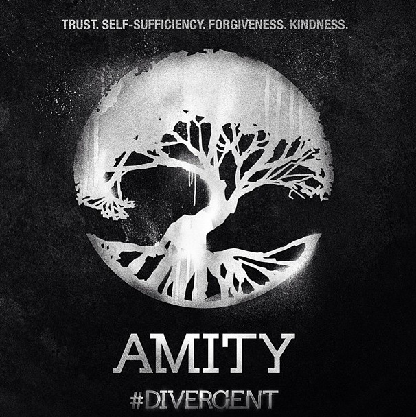

The series is about a 16 year old girl named Beatrice (Tris) Prior. Tris lives in a futuristic world in which society is divided into five factions; Dauntless, Abnegation, Erudite, Amity, and Candor. On a certain day every year, every person who had turned 16 years old must go through a simulation to see what faction they fit into. They would then choose their faction in the choosing ceremony, in which each person is called up one by one and let's their blood drip into one of the five pots that are in the center of the stage. Once they pick a faction, they are put through a series of tests to see if they actually fit into that faction. These tests can last for a few weeks to a few months. During her initiation she discovers that she is divergent. Being divergent means that she is genetically different from the rest. Divergents are considered a threat to society, they are seen as the enemy that needs to be eliminated. Tris and Tobias, along with a few others, are soon on the run from the people trying to rid the world of divergents.
Dauntless is a faction that values bravery. They value courage, bravery, strength, intimidation, and fearlessness. Dauntless was formed by a group of people that blamed fear and cowardice that causes all the problems in society. Memebers of the faction usually wear black, have piercings, have tattoos, and are usually seen running around the city, doing things that they would consider fun but most others would cinsider dangerous and idiotic.
Abnegation is a faction that values selflessness. They are the only faction that helps the factionless; poeple that were kicked out of their faction or had committed crimes. The Abnegation wear grey because they consider it a selfless colour. It is dull and it draws no attention to themselves.
The smart ones that value intelligence and logic are in Erudite. People in the faction must have ad rive to always learn more and question everything. The colour that they wear is blue. They consider blue a calming colour that stimulates the brain.
The ones that only want peace and happiness are the Amity. Amity are all about kindess and harmony. The members value peacefulness, kindness, forgiveness, and trust. They are also the faction that farms all the food. Members of Amity wear colours that are bright, such as red and yellow.
Lastly, Candor values order and the truth. They don't care how much the turth hurts, they will say it. None of the members have a filter, they say whatever comes to mind. Their colours are black and white because they believe the truth is black and white.